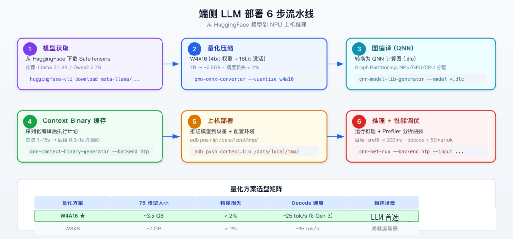

这是「高通 QNN 端侧 AI 部署全解析」系列的第二篇。上一篇我们搞懂了 QNN 的软件栈分层。今天来实战 — 从一个 HuggingFace 上的模型出发，一路走到 NPU 上跑起来的完整链路。
先看全流程：

Step 1：模型获取
从 HuggingFace 下载预训练模型。推荐 SafeTensors 格式（比 PyTorch .bin 更安全，支持 mmap 加载）：
# 安装 HuggingFace CLI
pip install huggingface-cli
# 下载 Llama 3.1 8B (约 16GB FP16)
huggingface-cli download meta-llama/Llama-3.1-8B-Instruct \
--local-dir ./llama3-8b \
--include "*.safetensors" "config.json" "tokenizer*"
# 或者用国内加速的 Qwen2.5 7B
huggingface-cli download Qwen/Qwen2.5-7B-Instruct \
--local-dir ./qwen25-7b模型选型建议：
| 模型 | 参数量 | FP16 大小 | INT4 大小 | 推荐场景 |
|---|---|---|---|---|
| Llama 3.1 8B | 8B | ~16GB | ~3.5GB | 通用对话、代码 |
| Qwen2.5 7B | 7B | ~14GB | ~3.2GB | 中文场景首选 |
| MiniCPM 3B | 3B | ~6GB | ~1.5GB | 低内存设备 |
| Phi-3.5 Mini | 3.8B | ~7.6GB | ~1.8GB | 推理能力强 |
端侧部署目前主流就是 3B-8B 这个区间。3B 以下能力不够用，8B 以上内存扛不住。
Step 2：量化压缩
FP16 模型太大，8B 模型 16GB，手机内存塞不下。量化是必经之路。
# 使用 QNN 转换器进行 W4A16 量化
qnn-onnx-converter \
--input_network ./llama3-8b/model.onnx \
--output_path ./llama3-8b-w4a16.dlc \
--quantization_overrides quantize_config.json \
--act_bw 16 \
--weight_bw 4 \
--bias_bw 32 \
--float_fallback--float_fallback 很关键 — 它让不适合量化的算子（比如 LayerNorm、Softmax）保持 FP16/FP32 精度，避免精度崩塌。
量化方案选型矩阵：
| 方案 | 权重精度 | 激活精度 | 7B 模型大小 | 精度损失 | Decode 速度 | 推荐场景 |
|---|---|---|---|---|---|---|
| W4A16 ★ | 4-bit | 16-bit | ~3.5GB | < 2% | ~25 tok/s | LLM 首选 |
| W8A8 | 8-bit | 8-bit | ~7GB | < 1% | ~15 tok/s | 高精度需求 |
| W8A16 | 8-bit | 16-bit | ~7GB | < 0.5% | ~18 tok/s | 精度敏感 |
| W4A8 | 4-bit | 8-bit | ~3.5GB | 3-5% | ~28 tok/s | 极致速度 |
| W16A16 (FP16) | 16-bit | 16-bit | ~14GB | 0% | ~8 tok/s | 基线对比 |
W4A16 是目前最佳平衡点 — 权重 4-bit 压缩 4 倍省内存，激活保持 16-bit 维持精度。大部分 LLM 在 W4A16 下的 PPL（困惑度）增加不到 0.5，人类几乎感知不到差异。
反直觉：W4A8 虽然速度更快，但在中文场景精度下降明显（5%+）。 因为中文 embedding 的分布比英文更稀疏，8-bit 激活容易截断长尾信息。做中文 LLM 别用 W4A8。
Step 3：图编译
量化完的 .dlc 还不能直接跑，需要让 QNN 做图编译：
# 生成模型库 (.so)
qnn-model-lib-generator \
--model ./llama3-8b-w4a16.dlc \
--backend libQnnHtp.so \
--lib_targets aarch64-android \
--output_dir ./model_libs/
# 输出: llama3_8b_w4a16.so (包含编译后的计算图)这一步 QNN 会做：
- 算子融合：MatMul + BiasAdd + Activation 融合成一个 kernel
- Graph Partitioning：自动把不支持的算子 fallback 到 GPU/CPU
- 内存规划：计算每层的 buffer 大小，做 buffer 复用减少内存占用
- 指令生成：把算子翻译成 HTP 硬件指令
Step 4：Context Binary 缓存
这步是冷启动优化的关键：
# 生成 Context Binary
qnn-context-binary-generator \
--model ./model_libs/llama3_8b_w4a16.so \
--backend libQnnHtp.so \
--output_dir ./cache/ \
--binary_file llama3_ctx.bin \
--config_file htp_config.jsonHTP 配置文件 htp_config.json：
{
"graphs": {
"vtcm_mb": 8,
"soc_model": "SM8650",
"performance_profile": "burst",
"precision": "fp16",
"enable_deep_learning_runtime": true
}
}| 参数 | 含义 | 建议值 |
|---|---|---|
| vtcm_mb | VTCM (L2 SRAM) 分配 | 8（最大化 SRAM 利用） |
| soc_model | 目标 SoC | SM8650 (8 Gen 3) / SM8750 (8 Elite) |
| performance_profile | 性能模式 | burst（最快）/ sustained_high（持续） |
| precision | 计算精度 | fp16（推荐）/ int8 |
Step 5：上机部署
把编译产物推到设备上：
# 推送模型和 QNN 运行库
adb push ./cache/llama3_ctx.bin /data/local/tmp/models/
adb push ./model_libs/*.so /data/local/tmp/qnn_libs/
# 推送 QNN SDK 运行库
adb push $QNN_SDK_ROOT/lib/aarch64-android/libQnnHtp.so /data/local/tmp/qnn_libs/
adb push $QNN_SDK_ROOT/lib/aarch64-android/libQnnHtpV73Stub.so /data/local/tmp/qnn_libs/
adb push $QNN_SDK_ROOT/lib/hexagon-v73/unsigned/libQnnHtpV73Skel.so /data/local/tmp/qnn_libs/
# 配置环境
adb shell "export LD_LIBRARY_PATH=/data/local/tmp/qnn_libs:\$LD_LIBRARY_PATH"Step 6：推理 + 性能调优
# 基础推理测试
adb shell "cd /data/local/tmp && \
qnn-net-run \
--backend libQnnHtp.so \
--model models/llama3_ctx.bin \
--input_list input_list.txt \
--output_dir ./output/ \
--perf_profile burst \
--profiling_level detailed"Profiler 输出会告诉你：
- 每层的执行时间（找到瓶颈层）
- NPU/GPU/CPU 的占比（确认 Partitioning 合理）
- 内存峰值使用量
- DDR 带宽利用率
性能基线（骁龙 8 Gen 3，Llama 3 8B W4A16）：
| 指标 | 数值 |
|---|---|
| Prefill (128 tokens) | ~180ms |
| Decode 速度 | ~25 tokens/s |
| 首 Token 延迟 | ~200ms |
| 内存占用 | ~4.2GB（含 KV Cache） |
| 功耗 | ~3W（NPU 单独） |
📊 DDR 带宽瓶颈分析
很多人以为端侧 AI 的瓶颈是算力（TOPS 不够）。坦率的讲，骁龙 8 Gen 3 的 45 TOPS 对于 7B 模型是够用的。真正的瓶颈是 DDR 带宽。
LLM decode 阶段，每生成一个 token 需要读取全部权重一遍：
7B INT4 权重: ~3.5GB
目标 25 tok/s: 3.5GB × 25 = 87.5 GB/s 理论需求
LPDDR5x 4266MHz 实际带宽: ~50 GB/s (理论 68.2, 实际利用率 ~75%)
87.5 / 50 = 1.75 → 带宽不够!为什么实际能跑到 25 tok/s？因为 QNN 做了几个优化：
- 权重分块加载 — 不是每个 token 都读全部权重，而是按 layer 分块，配合 DMA 预取流水线
- KV Cache 压缩 — GQA (Grouped Query Attention) 减少 KV Cache 带宽需求
- INT4 packing — 两个 4-bit 权重打包成一个字节，减少实际传输量
💡 这就是为什么骁龙 8 Elite 的 NPU 算力翻倍到 80 TOPS，但 decode 速度只快了 ~30% 而不是 100% — 因为瓶颈在带宽不在算力。LPDDR5x 没变，带宽天花板还在那。